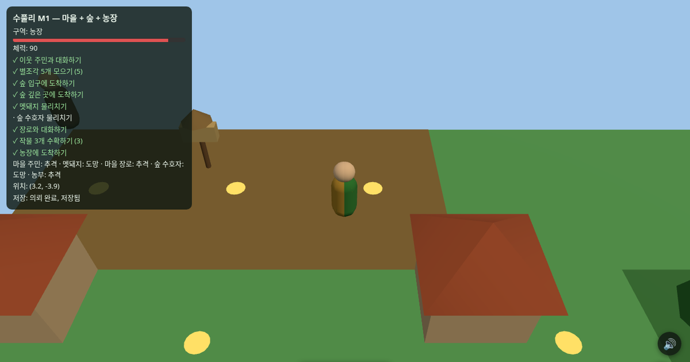
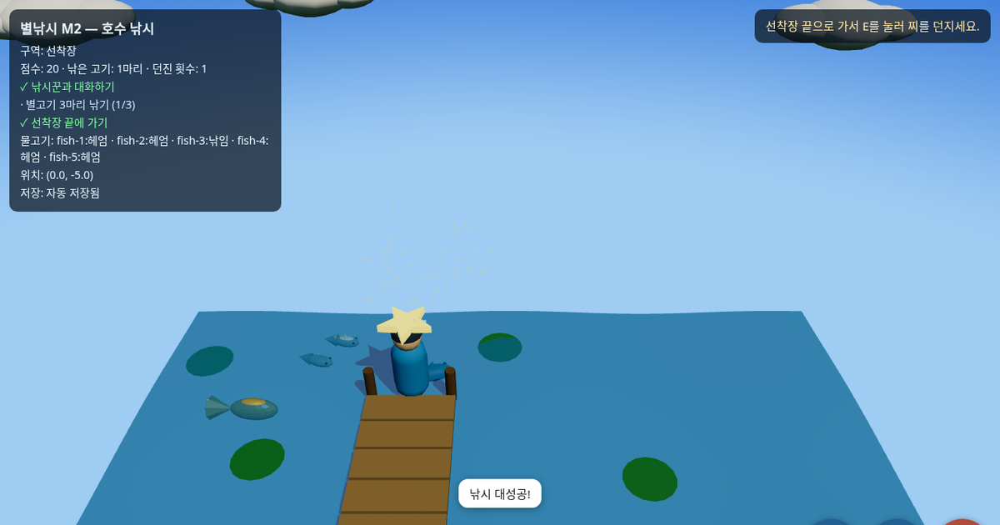
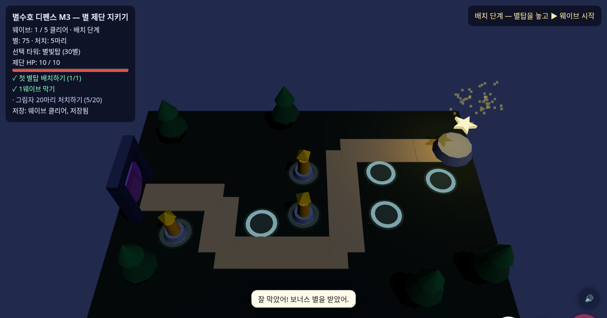

aldol.js 기반 웹 게임 엔진 — Three.js / WebGL2 · 결정적 시뮬레이션 · WorldForge 매니페스트 npm run check:all 로 검증하는 세 개의 별 게임을 브라우저에서 바로 플레이하세요.
npm run check:all

마을 주민과 대화하고, 깊은 숲에서 별조각을 모아 농장을 일구는 첫 게임. 의뢰 9개.

호수 선착장에서 별고기를 낚는 두 번째 게임. 찌 던지기 · 물기 타이밍 · 챔질. 의뢰 3개.

별빛탑과 달빛탑으로 그림자 적의 5웨이브를 막고 별 제단을 지키는 타워 디펜스. 의뢰 3개.